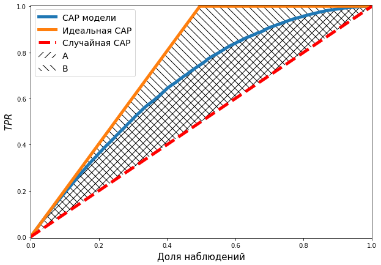
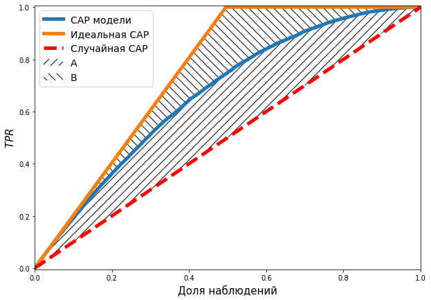
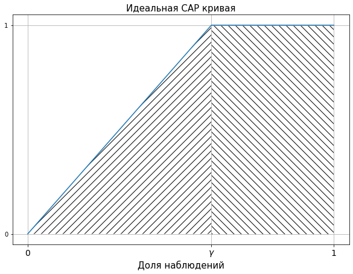

import pandas as pd
import numpy as np
from sklearn.metrics import roc_curve, auc
import matplotlib.pyplot as plt
from statsmodels.distributions.empirical_distribution import ECDF
np.random.seed(10)Сдержание:
Описание того, что мне известно о показателе GINI (в задаче классификации)
GINI метрика используемая для определения качества классификационной модели.
Базовое определение GINI
Обычно GINI определяют через CAP кривую.
GINI для некоторой модели, это отношение площадей между CAP кривой модели и случайной CAP кривой к площади между идеальной CAP и случайной CAP.
Покажем на рисунке:
plot_ss = 10000
np.random.seed(3)
random_range = np.random.rand(plot_ss)
plot_data = pd.DataFrame({
"p_hat" : random_range,
"y" : map(
lambda r_val: np.random.choice(
[0, 1], p = [1 - r_val, r_val]
),
random_range
)
})
plot_data.sort_values("y",inplace = True, ascending = False)
plot_data["p_hat_ideal"] = np.linspace(1,0, plot_data.shape[0])
fpr, or_tpr, t = roc_curve(
plot_data["y"], plot_data["p_hat"],
drop_intermediate = False
)
fpr, id_tpr, t = roc_curve(
plot_data["y"], plot_data["p_hat_ideal"],
drop_intermediate = False
)
CAP_x = np.arange(len(or_tpr))/len(or_tpr)plt.figure(figsize = [10,7])
plt.plot(CAP_x, or_tpr, linewidth = 5)
plt.plot(CAP_x, id_tpr, linewidth = 5)
plt.plot(
[0,1], [0,1], color = "red",
linestyle = "dashed",
linewidth = 5
)
plt.fill_between(
np.arange(len(or_tpr))/len(or_tpr),
or_tpr,
np.arange(len(or_tpr))/len(or_tpr),
hatch = "//",
alpha = 0
)
plt.fill_between(
np.arange(len(or_tpr))/len(or_tpr),
id_tpr,
np.arange(len(or_tpr))/len(or_tpr),
hatch = "\\\\",
alpha = 0
)
plt.xlabel("Доля наблюдений", fontsize = 15)
plt.ylabel("$TPR$", fontsize = 15)
plt.xlim([0,1])
plt.ylim([-0.005,1.005])
plt.legend(
[
"CAP модели", "Идеальная CAP",
"Случайная CAP", "A", "B"
],
fontsize = 14
)<matplotlib.legend.Legend at 0x7ff53d4a7fa0>
Следуя обозначениям площадей на рисунке, получаем:
\[GINI = \frac{A}{B}\]
Или испозуя альтернативное обозначение площадей (по, пока, незвенстной причине особенно популярное)
plt.figure(figsize = [10,7])
plt.plot(CAP_x, or_tpr, linewidth = 5)
plt.plot(CAP_x, id_tpr, linewidth = 5)
plt.plot(
[0,1], [0,1], color = "red",
linestyle = "dashed",
linewidth = 5
)
plt.fill_between(
np.arange(len(or_tpr))/len(or_tpr),
or_tpr,
np.arange(len(or_tpr))/len(or_tpr),
hatch = "//",
alpha = 0
)
plt.fill_between(
np.arange(len(or_tpr))/len(or_tpr),
id_tpr,
or_tpr,
hatch = "\\\\",
alpha = 0
)
plt.xlabel("Доля наблюдений", fontsize = 15)
plt.ylabel("$TPR$", fontsize = 15)
plt.xlim([0,1])
plt.ylim([-0.005,1.005])
ans = plt.legend(
[
"CAP модели", "Идеальная CAP",
"Случайная CAP", "A", "B"
],
fontsize = 14
)
\[GINI = \frac{A}{B+A}\]
Связь GINI c ROC
Есть альтернативный способ подсчитать \(GINI\) - через ROC кривую.
Аналитическое доказательсво
В качесве примера возьмем таблицу которую использовали при рассмотрении CAP кирвой. Каждое полученное тождество буду сверять с этим примером, для того, что-бы быть уверенным, в том, что в процессе не допущено ошибок.
| \(i\) | \(\hat{p}_i\) | \[y_i\] | \[i/n\] | \[TPR_i\] | \[FPR_i\] |
|---|---|---|---|---|---|
| 1 | 0.8 | 1 | 0.2 | 1/3 | 0 |
| 2 | 0.7 | 1 | 0.4 | 2/3 | 0 |
| 3 | 0.6 | 0 | 0.6 | 2/3 | 1/2 |
| 4 | 0.4 | 0 | 0.8 | 2/3 | 1 |
| 5 | 0.2 | 1 | 1 | 1 | 1 |
Сразу обозначим, что \(FPR_0=TPR_0=0\).
Все массивы примера, что на м понадобиться, загоняем в память компьютера.
n = 5
TPR = np.array([0, 1/3, 2/3, 2/3, 2/3, 1])
FPR = np.array([0, 0, 0, 1/2, 1, 1])
i = np.arange(6)
y = np.array([1,1,0,0,1])Запишем площадь под ROC кривой, что и будет показателем \(AUC_{roc}\):
\[AUC_{roc} = \sum_{i=0}^{n-1} (FPR_{i+1} - FPR_i)(TPR_{i+1} + TPR_i)/2. \tag{1}\]
\(GINI\) от сюда выражается:
\[GINI = 2AUC_{roc}-1. \tag{2}\]
auc_roc = np.sum((FPR[1:] - FPR[:-1])*(TPR[1:] + TPR[:-1])/2)
2*auc_roc - 10.33333333333333326Запишем площадь под дейсвтительной CAP кривой:
\[AUC_{cap} = \sum_{i=0}^{n-1}([i+1]/n - i/n)(TPR_{i+1} + TPR_i)/2 = \sum_{i=0}^{n-1}(TPR_{i+1} + TPR_i)/2n.\]
Тогда площадь между случайной CAP кривой и действительной CAP кривой будет выражаться так:
\[AUC_{cap}' = \sum_{i=0}^{n-1}(TPR_{i+1} + TPR_i)/2n - 0.5.\tag{3}\]
Подсчитаем эту величину, для нашего примера:
AUC_cap = sum((i[1:]/n - i[:-1]/n)*(TPR[1:] + TPR[:-1])/2) - 0.5
AUC_cap0.06666666666666654К записи площади под идеальной CAP кривой лучше подойти с геометрической точки зрения:
y_rel_ideal = [0, 1/3, 2/3, 1, 1, 1]
x_rel = [i/5 for i in range(6)]
plt.figure(figsize = [10, 7])
plt.plot(x_rel, y_rel_ideal)
plt.fill_between(
[0, 0.6], [0, 1], [0,0],
alpha = 0, hatch = "//"
)
plt.fill_between(
[0.6, 1], [0, 0], [1,1],
alpha = 0, hatch = "\\\\"
)
plt.yticks([0, 1])
plt.xticks(
[0, 0.6, 1],
["0", "$\gamma$", "1"],
fontsize = 14
)
plt.title(
"Идеальная CAP кривая",
fontsize = 15
)
plt.grid()
plt.xlabel("Доля наблюдений", fontsize = 15)Text(0.5, 0, 'Доля наблюдений')
Где \(\gamma\) - доля наблюдений с проявлением признака:
\[\gamma = \frac{\sum_{i=1}^ny_i}{n}.\]
Эта площадь раскладывается на 2 фигуры: - Треугольник, выделенный штриховкой наклоненной влево; - Прямоугольник, выделейнный штрифовной наклоненной вправо.
Очевидно такую площадь можно записать:
\[AUC^I = \gamma/2 + (1-\gamma) = 1 - \gamma/2.\]
Тогда площадь можду идеальной CAP кривой и случайной CAP кривой составит:
\[AUC'^I = 1 + \gamma/2 - 0.5=0.5 - \gamma/2.\]
Или подставляя \(\gamma\):
\[AUC'^I = 0.5 - \frac{\sum_{i=1}^{n}y_i}{2n}.\tag{4}\]
Подсчитаем значение, принимаемое данной величиной, для нашего примера:
AUC_I = 0.5-sum(y)/(2*n)
AUC_I0.2Тогда \(GINI\) через CAP кривую:
\[GINI = \frac{AUC_{cap}'}{AUC'^I}. \tag{5}\]
Убедимся, что он совпадает с числом полученным через ROC:
AUC_cap/AUC_I0.3333333333333327И так, для доказательства нам следуем показать равенство выражений \((2),(5)\), подставив туда \((1),(3),(4)\) или:
\[2AUC_{roc}-1 = \frac{AUC_{cap}'}{AUC'^I} \Leftrightarrow\] \[\Leftrightarrow 2\left[\sum_{i=0}^{n-1} (FPR_{i+1} - FPR_i)(TPR_{i+1} + TPR_i)/2\right] -1 = \frac{ \sum_{i=0}^{n-1}(TPR_{i+1} + TPR_i)/2n - \frac{1}{2} }{ \frac{1}{2} - \frac{\sum_{i=1}^{n}y_i}{2n} } \Leftrightarrow \tag{6}\]
\[\Leftrightarrow \left[\sum_{i=0}^{n-1} (FPR_{i+1} - FPR_i)(TPR_{i+1} + TPR_i)\right] -1 = \frac{ \sum_{i=0}^{n-1}(TPR_{i+1} + TPR_i)/2n - \frac{1}{2} }{ \frac{1}{2} - \frac{\sum_{i=1}^{n}y_i}{2n} }\]
Будем работать с правой частью тождества:
\[\frac{ \sum_{i=0}^{n-1}(TPR_{i+1} + TPR_i)/2n - \frac{1}{2} }{ \frac{1}{2} - \frac{\sum_{i=1}^{n}y_i}{2n} }=\]
\[=\frac{ \sum_{i=0}^{n-1}(TPR_{i+1} + TPR_i)/2n - \frac{1}{2} }{ \frac{n - \sum_{i=1}^{n}y_i}{2n} }=\]
\[=\frac{ \left[\sum_{i=0}^{n-1}(TPR_{i+1} + TPR_i)\right] - n }{ n - \sum_{i=1}^{n}y_i }=\]
\[ =\left[\sum^{n-1}_{i=0} \frac{1}{n - \sum_{i=1}^{n}y_i}(TPR_{i+1}+TPR_i) \right] - \frac{n}{n - \sum_{i=1}^{n}y_i} \tag{7} \]
Убедимся на числах, что проделанные пребразования корректны.
(sum(TPR[1:] + TPR[:-1])-n)/(n-sum(y))0.33333333333333304Будем работать с левой частью тождества:
\[ \left[\sum_{i=0}^{n-1} (FPR_{i+1} - FPR_i)(TPR_{i+1} + TPR_i)\right] -1 \tag{8} \]
Обсудим свойсва выражения:
\[ (FPR_{i+1} - FPR_i) \]
\(FPR\) (доля ложно положительных предсказаний) прирастает только для предсказаний без проявления признака. А, для наблюдения без проявления признака, прирастает на долю, которую занимает одно набллюдение без проявления признка:
\[ (FPR_{i+1} - FPR_i)=\begin{cases} 0, y_i=1;\\ \frac{1}{n-\sum_i^n y_i}, y_i=0. \end{cases} \]
Где \(n-\sum_i^n y_i\) - число наблюдений без проявления признака, тогда:
\[\frac{1}{n-\sum_i^n y_i}\]
доля в одного наблюдения в наблюдениях с проявлением признака.
Тогда выражение \((8)\) может быть переписано следующим образом:
\[ \left[\sum_{i|y_{i+1}=0} \frac{1}{\sum_{i=1}^n n-y_i}(TPR_{i+1} + TPR_i)\right] -1 \tag{9} \]
То есть суммирование можно произвести только для членов, для которых \(y_{i+1}=0\), все остальные будут равняться нулю. При том в не нулевых членнах один из множителей - константа относительно оператора суммирования.
Убедимся, что проделанные преобразования корректны:
np.sum(
(1/(n - sum(y)))*\
(TPR[1:][y==0] + TPR[:-1][y==0])
) - 10.33333333333333326Теперь допустим, что тождество \((6)\) верно. Тогда, учитвая во внимание, последние результаты \((7), (9)\):
\[ \left[\sum^{n-1}_{i=0} \frac{1}{n - \sum_{i=1}^{n}y_i}(TPR_{i+1}+TPR_i) \right] - \frac{n}{n - \sum_{i=1}^{n}y_i} = \left[\sum_{i|y_{i+1}=0} \frac{1}{n-\sum_{i=1}^n y_i}(TPR_{i+1} + TPR_i)\right] -1 \Leftrightarrow \tag{10}\]
\[ \Leftrightarrow \left[\sum^{n-1}_{i=0} \frac{1}{n - \sum_{i=1}^{n}y_i}(TPR_{i+1}+TPR_i) \right] - \left[\sum_{i|y_{i+1}=0} \frac{1}{n-\sum_{i=1}^n y_i}(TPR_{i+1} + TPR_i)\right] - \frac{n}{n - \sum_{i=1}^{n}y_i} + 1 = 0 \]
Обратите внимание на выражения в квадратных скобках - они полностью совпадают, отличается лишь число компонент суммирования, т.е. после вычитания остануться только те компоненты которых нет в вычитаемом:
\[ \left[ \sum_{i|y_{i+1}=1} \frac{1}{n-\sum_{i=1}^n y_i}(TPR_{i+1} + TPR_i) \right] - \frac{n}{n - \sum_{i=1}^{n}y_i} + 1 = 0 \]
Убедисмя, что представленное равенстно верно:
sum(
(1/(n-sum(y)))*(TPR[1:][y==1] + TPR[:-1][y==1])
) -\
n/(n-sum(y)) + 10.0Далее можно провести рад преобразований над полученным выражением:
\[ \left[ \sum_{i|y_{i+1}=1} \frac{1}{n-\sum_{i=1}^n y_i}(TPR_{i+1} + TPR_i) \right] - \frac{n}{n - \sum_{i=1}^{n}y_i} + 1 = 0 \Leftrightarrow \]
\[ \Leftrightarrow \left[ \sum_{i|y_{i+1}=1} \frac{1}{n-\sum_{i=1}^n y_i}(TPR_{i+1} + TPR_i) \right] - \frac{\sum_{i=1}^{n}y_i}{n - \sum_{i=1}^{n}y_i} = 0 \Leftrightarrow \]
\[ \Leftrightarrow \frac{1}{n-\sum_{i=1}^n y_i} \left\{ \left[ \sum_{i|y_{i+1}=1} (TPR_{i+1} + TPR_i) \right] - \sum_{i=1}^{n}y_i \right\} = 0 \]
Учитывая, что выражение \(\frac{1}{n-\sum_{i=1}^n y_i}\) не отрицательное. То для выполнения последнего тождества необходимо, чтобы:
\[ \left[ \sum_{i|y_{i+1}=1} (TPR_{i+1} + TPR_i) \right] - \sum_{i=1}^{n}y_i =0 \tag{11}\]
Рассмотрим сумму в квадратных скобрах:
\[\sum_{i|y_{i+1}=1} (TPR_{i+1} + TPR_i)\]
Перепишем её проще, но держа в памяти, что суммирование проводится только по наблюдениям с проявлением признака:
\[\sum_{i=0}^{m-1} (TPR_{i+1} + TPR_i)\]
Где \(m=\sum_{i=1}^{n}y_i\).
Теперь вспомним, что \(TPR\) это доля клиентов, с проявлением, признака для которых было предсказано проявление признака. Получается, что для каждого клиента с проявлением признака \(TPR\) возрастает на \(\frac{1}{m}\). Тогда в данной сумме. можно записать, что:
\[ \sum_{i=0}^{m-1} \left(\frac{i+1}{m} + \frac{i}{m}\right)= \sum_{i=0}^{m-1} \left(\frac{2i+1}{m}\right) \]
Возвращаясь к тождеству \((10)\) и используя нововведенные обозначения:
\[ \sum_{i=0}^{m-1} \left(\frac{2i+1}{m}\right)=m\Leftrightarrow \sum_{i=0}^{m-1} 2i+1 = m^2 \tag{12} \]
Доказав это пождество мы докажем, что выполняется вся цепочка тождеств выше. Есть уже очень похожее доказательсво, представленное тут. Но мы его приведдем для нашего примера:
Распишем выражение:
\[\sum_{i=0}^{m-1} 2i+1 = 1 + 3 + 5 + ... + 2(m-1)+1.\]
Тут не хватает четных чисел в суммации добавим и отнимем их:
\[\sum_{i=0}^{m-1} 2i+1 = \{1 + 3 + 5 + ... + [2(m-1)+1]\} + \{2 + 4 + 6 + ... + 2(m-1)\} - \{2 + 4 + 6 + ... + 2(m-1)\}.\]
Объединим и упрядочим компоненты первых и вторых фигурных скобок и вынесем 2 из вторых:
\[\sum_{i=0}^{m-1} 2i+1 = \{1 + 2 + 3 + 4 + ... + 2(m-1) + [2(m-1)+1]\} - 2\{1 + 2 + 3 + ... + (m-1)\}.\]
Возвращаясь к оператом суммирования получаем:
\[\sum_{i=0}^{m-1} 2i+1 = \left[\sum_{i=1}^{2(m-1)+1}i\right] - 2\left[\sum_{i=1}^{m-1}i\right]. \tag{13}\]
Далее надо выразить:
\[\sum_{i=1}^\nu i.\]
Тут можно найти, что:
\[2\sum_{i=1}^\nu i = \sum_{i=1}^\nu i + \sum_{i=1}^\nu i = [1 + 2 + ... + (\nu-1) + \nu] + [\nu + (\nu-1) + ... + 2 + 1]=\]
\[=(\nu+1) + (\nu-1+2) + ... + (2 + \nu - 1) + (\nu+1)=\]
\[=(\nu+1) + (\nu+1) + ... + (\nu+1)=\]
\[=\sum_{i=1}^n (\nu+1) = \nu(\nu+1)\]
И так:
\[2\sum_{i=1}^\nu i = \nu(\nu+1) \Leftrightarrow \sum_{i=1}^\nu i = \frac{\nu(\nu +1)}{2}\]
Тогда, возвращаясь к \((13)\) получаем: \[ \sum_{i=0}^{m-1} 2i+1 = \] \[ =\frac{[2(m-1)+1]([2(m-1)+1] + 1)}{2} - 2\frac{[m-1]([m-1]+1)}{2}=. \] \[ =\frac{2m[2m+1]}{2} - [m-1]([m-1]+1)= \] \[ =m[2m+1] - m[m-1] = \] \[ = 2m^2+m-m^2-m= \] \[ = m^2 \]
И так получается, что:
\[\sum_{i=0}^{m-1} 2i+1 = m^2\]
Таким образом, выполняется тождество \((12)\), получается справедливым \((11)\), за ним \((10)\) и окончательно \((6)\boxtimes\).
Вычислительный экперимент
Предполагается сэмитировать результаты не которого классификатора и подсчитать для него \(GINI\) обоими методами, для того, чтобы убедиться, что результат одинаковый.
Эмитация результата модели
plot_ss = 10000
np.random.seed(3)
random_range = np.random.rand(plot_ss)
plot_data = pd.DataFrame({
"p_hat" : random_range,
"y" : map(
lambda r_val: np.random.choice(
[0, 1], p = [1 - r_val, r_val]
),
random_range
)
})
plot_data.head()| p_hat | y | |
|---|---|---|
| 0 | 0.550798 | 0 |
| 1 | 0.708148 | 1 |
| 2 | 0.290905 | 1 |
| 3 | 0.510828 | 0 |
| 4 | 0.892947 | 1 |
Вычисление через ROC
# вычисление точек ROC-кривой
fpr, tpr, t = roc_curve(
plot_data["y"], plot_data["p_hat"],
drop_intermediate = False
)
# вычисление GINI через площадь точек под
# ROC кривой
2*auc(fpr, tpr) - 10.6599391056843444Вычисление через CAP
plot_data.sort_values("y",inplace = True, ascending = False)
plot_data["p_hat_ideal"] = np.linspace(1,0, plot_data.shape[0])
# вычисление ординат наблюдаемой CAP кривой
_, tpr_real, _= roc_curve(
plot_data["y"], plot_data["p_hat"],
drop_intermediate = False
)
# вычисление площади под CAP
ideal_CAP_auc = plot_data["y"].sum()/plot_data.shape[0]/2 + \
(plot_data["y"] == 0).sum()/plot_data.shape[0]
# вычисление ординат случайной CAP
tpr_random = np.linspace(0,1, len(tpr_real))
B = ideal_CAP_auc - 0.5
A = auc(tpr_random, tpr_real) - 0.5
A/B0.6599391056843441Отличие только в последнем знаке и, скорее всего, обусловлено округлением.
(sum(tpr_real[1:] + tpr_real[:-1]) - plot_data.shape[0])/
(plot_data.shape[0] - plot_data[“y”].sum())